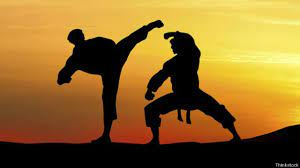

 Las artes Marciales
16/06/2022
Contexto
Las artes marciales (también artes militares o castrenses) son prácticas y tradiciones cuyo objetivo es someter o defenderse mediante una técnica concreta. Hay varios estilos y escuelas de artes marciales que habitualmente excluyen el empleo de armas de fuego u otro tipo de armamento moderno. A su vez, lo que diferencia a las artes marciales de la mera belicosidad o violencia física (pelea callejera) es la organización de sus técnicas y tácticas en un sistema coherente; la adhesión a una filosofía de vida o código de conducta y la codificación de métodos efectivos probados en la antigüedad. En la actualidad, las artes marciales se practican por diferentes razones: la salud, la protección personal, el desarrollo personal, la disciplina mental, la forja del carácter y la autoconfianza. El significado estricto es el de artes militares, por extensión se aplica a todo tipo de estilos de artes de lucha cuerpo a cuerpo y al uso de armas tradicionales tales como el/la esgrima antigua.
Desarrollo
En lo que respecta a las artes marciales de origen oriental, se establece un comienzo a partir de la visita de Gautama el Buda (500 a.c. aprox.) a China, donde él bendice a los desarrolladores con el conocimiento del Qí, principio activo de la cultura china tradicional que forma parte de todo ser vivo y que podría traducirse como "flujo vital de energía". Esto los invitó a reflexionar en una nueva manera de movimientos armónicos donde el Qí circulara correctamente a través del cuerpo y se manifestara al exterior con belleza, suavidad, facilidad y potencia. A partir del conocimiento de la energía inicia uno de los desarrollos más antiguos de las artes corporales como herramienta marcial.
Motivacion
Sin embargo, hasta el siglo XIX no surge el concepto y término moderno de artes marciales, el cual deriva de los caracteres chinos wǔ shù 武術 y wǔ yì 武藝. Por su parte, el nombre marcial proviene de Marte, el dios de la guerra romano. Las artes marciales orientales, en algunos casos, se practicaban en círculos cerrados o eran distintivas de una élite relacionada con la milicia y la nobleza, como fue el caso de los guerreros samurá y su contenido iba mucho más allá de lo que constituía el entrenamiento de las tropas..